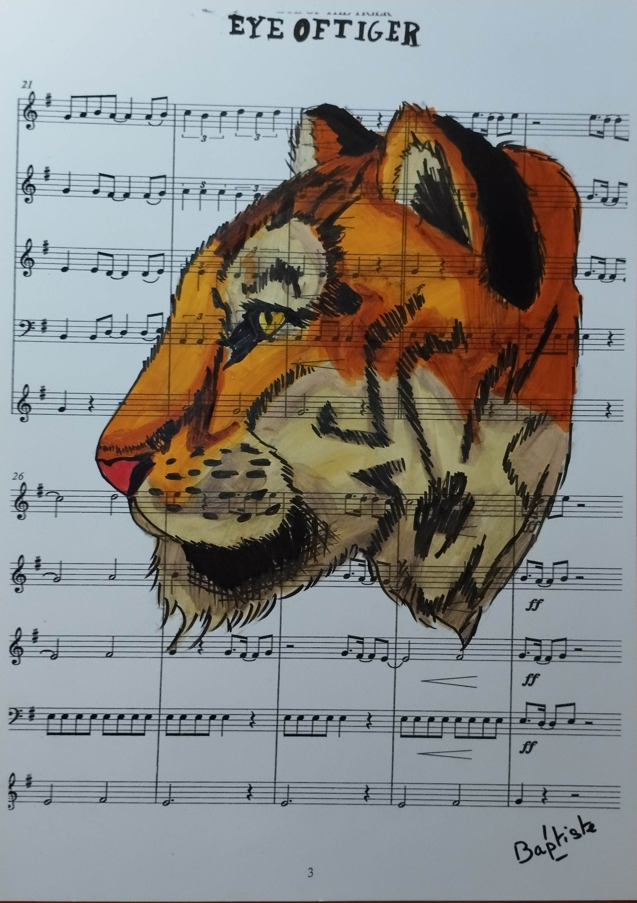
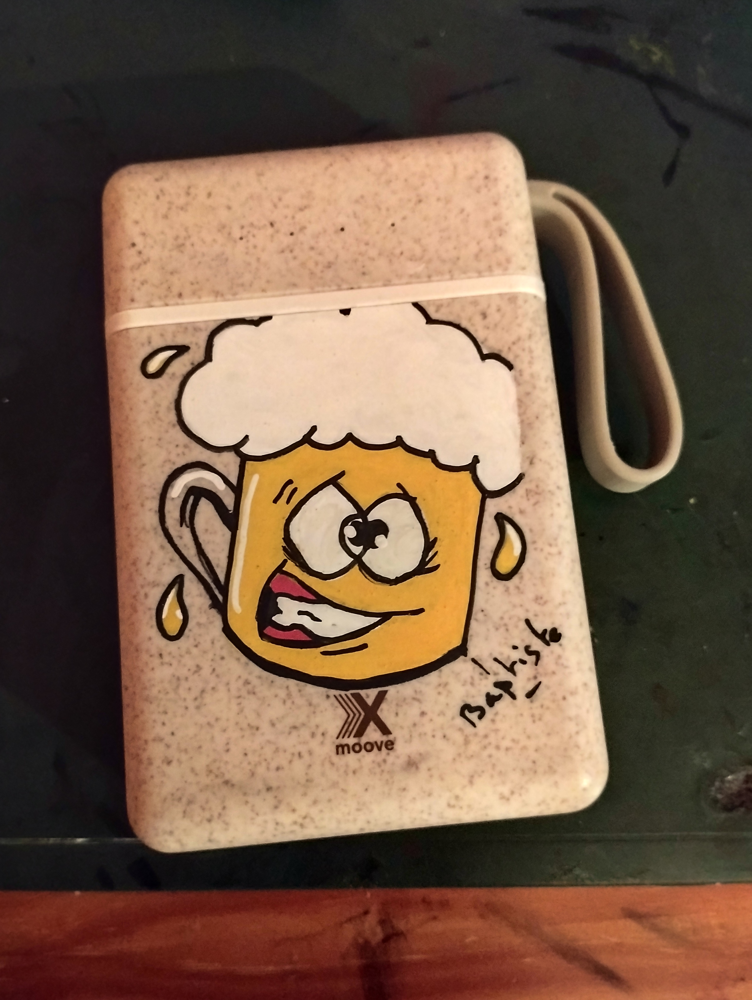
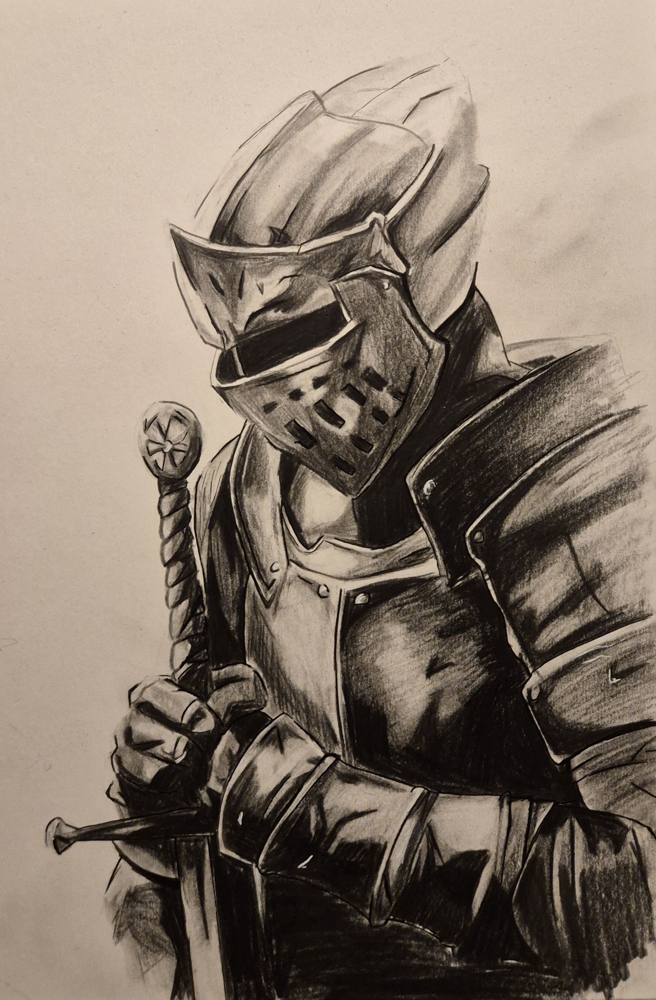
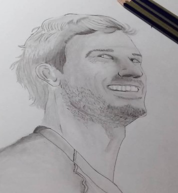
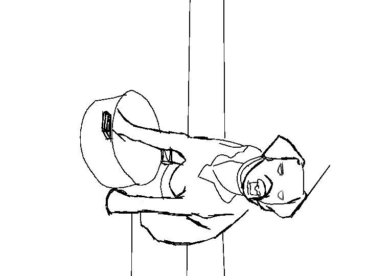

← Retour au répertoire des projets
Projet 11 / 11 · Arts Visuels & Illustration
Atelier d'Illustration, Mascottes & Croquis
En contrepoint de la rigueur éditoriale et typographique, cet atelier regroupe mes créations illustrées : character design vectoriel (Burger Mascotte), peintures à l'encre sur partitions musicales d'époque, customisation au feutre Posca et études d'observation au graphite.
Carnets & Pièces Originales
Mosaïque d'œuvres d'atelier
Cliquez sur chaque visuel pour l'afficher en haute résolution dans la visionneuse plein écran.
« Tracé au feutre, encre de Chine et mine de plomb »
Vectoriel sous Illustrator · Sneakers, casquette skull et flèches dynamiques.

Encre & acrylique sur partition de Survivor · Signé Baptiste.

Dessin au trait épais et rehauts d'acrylique sur support mobile.

Dessin d'observation au crayon et hachures croisées.

Travail des ombres douces et du regard d'après modèle.

Étude de posture rapide au trait numérique épuré.